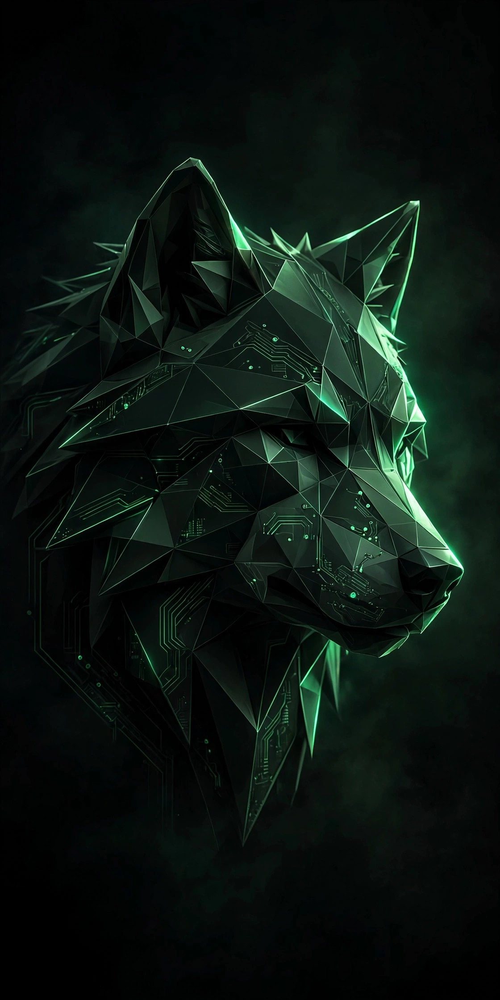

Rolling foundation
Arch Linux brings current packages, a huge software ecosystem, and the flexibility to shape the system without fighting hidden layers.
FangOS is an independent Linux system built on Arch, shaped around KDE Plasma, and packaged with a guided Calamares installer. Fast, direct, and unmistakably its own.
FangOS 2026.09.14 · ≈ 2.8 GiB ISO · release page

FangOS started as a bucket-list operating system project and made the jump to real hardware. The result is a focused desktop Linux experience with Arch underneath and a proper installer on top.
Arch Linux brings current packages, a huge software ecosystem, and the flexibility to shape the system without fighting hidden layers.
KDE Plasma provides a familiar, capable environment from the first login, with room to make the desktop entirely yours.
Calamares handles disk setup, users, locale, and installation through a graphical flow instead of a wall of terminal commands.
The profile, packages, branding, and build configuration live in public. Inspect the work, report an issue, or make it better.
Three stages, one USB drive. Back up anything important before changing disk partitions.
Download the FangOS ISO from the official release on the Internet Archive, then compare its SHA-256 checksum before writing the image.
On Linux:
sha256sum fangos-2026.09.14-x86_64.isoOn Windows (PowerShell):
Get-FileHash .\fangos-2026.09.14-x86_64.iso -Algorithm SHA256The output must match this checksum exactly:
04cf0a7e4c2a3540086966b3078813c30568c42e6ef01fb6384f314a046ab137On Linux — identify the USB device, unmount its partitions, and write the ISO directly. Replace /dev/sdX with the whole USB device—not a numbered partition.
sudo dd if=fangos-2026.09.14-x86_64.iso of=/dev/sdX bs=4M status=progress oflag=syncOn Windows — use Rufus (free, no install needed):
FangOS targets standard 64-bit PCs. A wired or wireless internet connection is recommended during installation and for updates afterward.